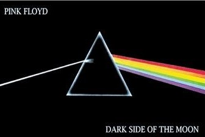
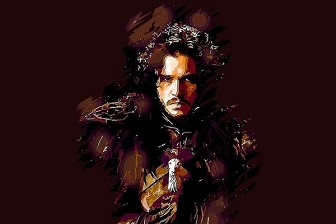

Our Story
When I was 7 years old, I wanted to listen to Blurred Lines, but my mother wouldn't let me. Since then, I've been on a mission to connect people with music.
Before Shagun Store I don't know how people bought CDs. But now, anything is possible #TrustTheProcess
Our Favourite Posters
Dark Side of the Moon
Pink Floyd's Dark Side of the Moon changed the cultural fabric of society, and with this poster you can change the fabric in your house.
Depicting a prism turning white light into a rainbow, this poster symbolizes how although people come in many different races, we are all human. 20% of proceeds from this poster will be donated to UNICEF to help foster world peace and collaboration
We know that you'll love this poem as much as we do. Right now it's hanging on our CEO's wall, and will stay there as long as Shagun Store sticks around.
A Song of Ice and Fire
HBO's Game of Thrones left millions around the world speechless, and so will this poster of the King in the North. Painstakingly crafted in Adobe Photoshop, this gorgeous poster will remind you that Winter is Coming.
Ramin Djawadi's beautiful orchestral score set the mood for the hit TV series, and this is why we're celebrating his work with this limited edition album poster. Shagun Store is proud to announce that Djawadi will be personally signing every poster ordered from now until GRRM releases the next book.
Due to high demand this poster has limited quantities. To ensure you receive this poster, order now.